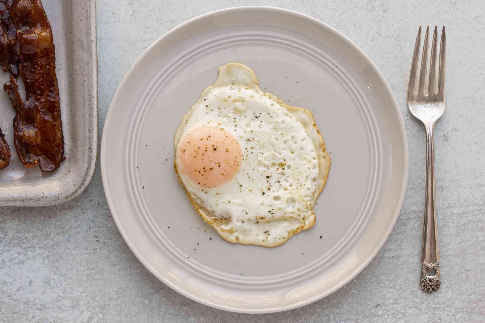

Recipe of Fried egg
To make good fried egg, it should use alot of oil to make it crispy.
Other fillings can enhance the taste of the fried egg
Ingredients:
Egg
Oil
Steps:
1) Crack egg into bowl
2) Lightly oil the pan and turn up the heat
3) Place the egg into the frying pan